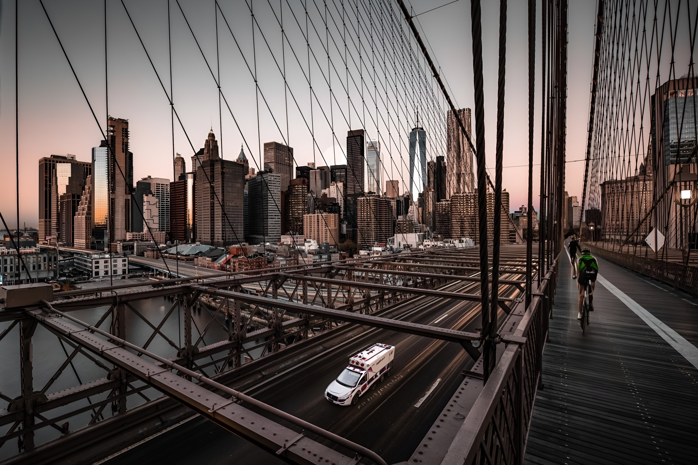
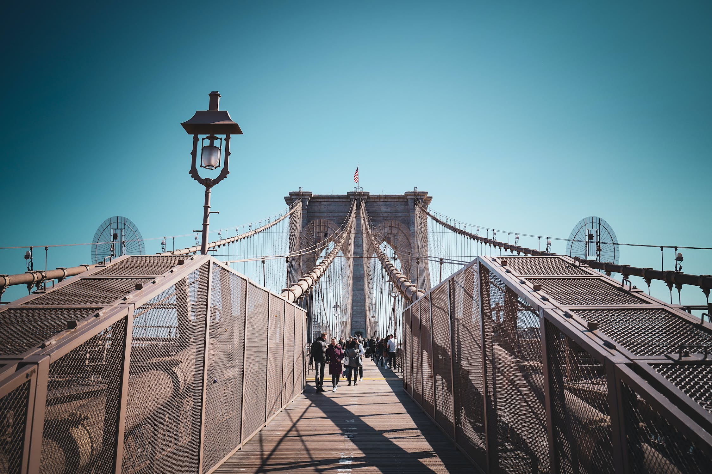

The iconic Brooklyn Bridge connects Lower Manhattan and Brooklyn Heights. Known for its stone arches, the Brooklyn Bridge supports six lanes of vehicles (no trucks) and a shared pedestrian and bicycle path. As of 2018, an average of over 116,000 vehicles, 30,000 pedestrians and 3,000 cyclists travel over the Brooklyn Bridge each day.